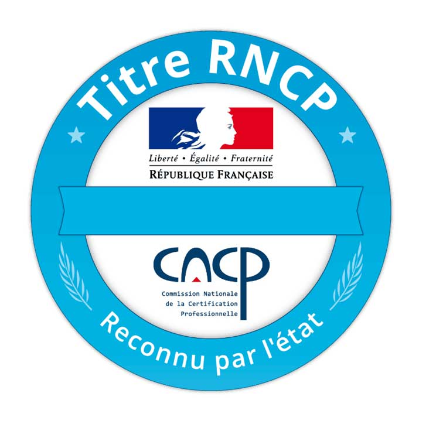
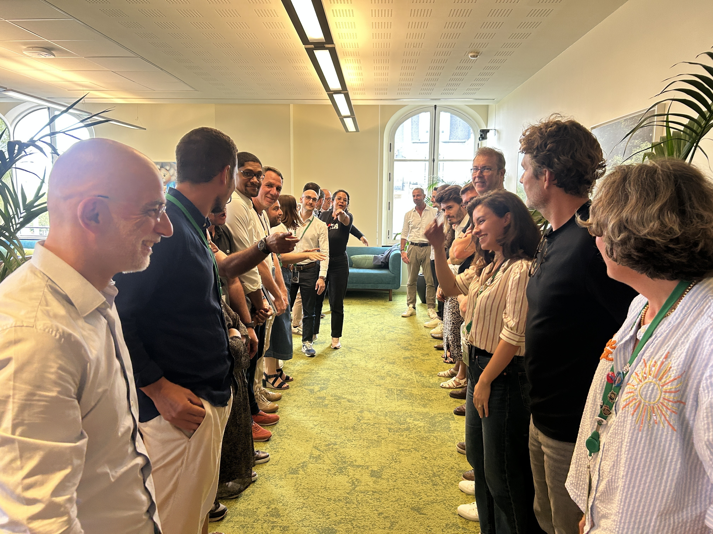

Who’s helping you lead through it?
Plus de réponses, toujours plus vite.
Mais lesquelles comptent pour vous et vos équipes ?
Your teams are absorbing a pace of change the market itself struggles to keep up with. The question is no longer competence. It’s where to find the energy and the judgment — for you, for them.
I work on this question at three levels: your leaders individually, your teams, and the transformation of the Salesforce France organization.
Je suis Stéphane Baudet-Lambert, votre Sales Leaders Excellence Coach.
Mon parcours combine expérience business, conduite de transformations et pratique du coaching. C’est cette combinaison qui me permet de lire les organisations à plusieurs niveaux à la fois, et de construire des accompagnements sur-mesure.
6+ ans en Sales & Marketing chez Danone, Nutrixo et Intermarché, où j’ai appris la réalité commerciale, la pression du chiffre et ce que signifie être responsable d’un résultat. Puis 8 ans en tant que Strat SE chez Salesforce, sur nos grands comptes AXA, Publicis et AG2R La Mondiale.
10 ans à conduire des programmes de transformation stratégique. J’ai vu ce qui fait avancer les organisations complexes — et ce qui les fige, souvent malgré les meilleures intentions.

Certifié en Performance & Transformation Collective (titre RNCP). Une pratique construite autour du leadership, de l’intelligence collective et des conditions d’une performance qui tient dans le temps.
Mon travail n’est pas de donner les réponses.C’est de créer les conditions
pour que de meilleures réponses émergent.
Dans les transformations comme dans le coaching,
les bonnes décisions émergent rarement de la pression ou de l’expertise seule.
Elles émergent quand les conditions sont réunies.
« Les personnes interrogées, pourvu qu’on les interroge bien, trouvent en elles-mêmes les bonnes réponses. »
Socrate
Sales Leaders Excellence Coach
J’accompagne les sales leaders et leurs équipes chez Salesforce France — sur la posture de leadership, la dynamique d’équipe, la performance commerciale et l’adoption de l’IA. Un rôle à l’intersection du coaching et de la transformation.
Facilitateur externe — BNP Paribas, division Transfo/Orga
J’anime des ateliers de transformation pour les équipes BNP Paribas via le programme Bivwak!. Une pratique qui nourrit et élargit ma compréhension des dynamiques de changement, au-delà d’un seul contexte d’entreprise.
The same transformation — at different scales of complexity.
How do I evolve the way I lead?
From producing answers to creating clarity, judgment and direction.
Clarity
TeamHow do we evolve the way we work together?
From a group of experts to a system that creates collective intelligence.
Alignment
OrganizationHow do we evolve the way the organization transforms?
From transformation programs to transformation capability.
Transformation
One underlying objective: helping people and systems evolve.
Lorsque l’information et les réponses deviennent toujours plus accessibles, la valeur du leader se déplace.
Il ne s’agit plus seulement de savoir.
Il s’agit de discerner ce qui compte, donner une direction, décider et permettre au collectif d’avancer.
C’est ce déplacement que j’accompagne.
Dans mon rôle de Sales Leaders Excellence Coach chez Salesforce, j’accompagne au quotidien des leaders sur des situations où la réponse n’est pas évidente : arbitrer, décider, faire évoluer leur posture managériale à l’ère agentique, exercer leur leadership dans l’incertitude et clarifier leur trajectoire professionnelle.
Je leur offre un cadre de réflexion sur soi, confidentiel, bienveillant mais non complaisant : un espace pour prendre du recul, questionner ses certitudes, regarder ses angles morts et, lorsque c’est nécessaire, être confronté avec bienveillance pour progresser réellement.
Mes zones d’intervention
Tu poses des questions inattendues qui m’aident à avancer, merci.
— Un coaché
Résultat : une décision prise, une posture ajustée, une transition mieux vécue.

Je voulais te remercier pour la session d’hier ! J’ai adoré à la fois le format, les exercices, le fond, l’ambiance et surtout je suis ressortie remplie d’énergie. C’était super, et franchement bravo pour l’organisation et l’exécution.
— Une Leader suite au Back To School Tableau
Un groupe de personnes compétentes n’est pas automatiquement une équipe performante. La performance collective dépend rarement des compétences individuelles. Elle dépend de la qualité des conversations, de la capacité à exprimer les désaccords, de la confiance et de la façon dont l’intelligence circule dans le groupe.
Ces conditions ne s’imposent pas. Elles se construisent.
J’accompagne les équipes lorsqu’une transformation exige plus qu’un alignement de façade : clarifier ce qui compte, faire émerger les tensions utiles, améliorer la qualité des conversations et créer les conditions d’une décision réellement collective.
Cela peut prendre la forme d’un travail systémique avec l’équipe, d’une session de développement collectif ou d’un accompagnement des rituels de leadership, jusqu’à la préparation de briefings permettant de maintenir l’alignement dans la durée.
Mes zones d’intervention
RÉSULTAT : Un collectif aligné, capable de décider et d’avancer ensemble.
AI accelerates change. It doesn't create the capacity to change. Organizations that transform durably don't just evolve their plans — they develop their capacity to change at every level, not just at the top.
The bottleneck is almost never the technology. It is leadership, culture, and how change is carried locally.
I work on large-scale transformation topics, including AI skills development (LEAD AI programme), assessing and building learning paths for leaders. I also serve as an external facilitator for BNP Paribas, within the Transfo/Orga Bivwak! division.
Support for the BDR of the Future strategic programme — recommendations validated by sponsor leaders.
Contribution with Sales Leaders & Employee Services on the LEAD AI app — laying the groundwork for supporting leaders in the AI era.
Areas of focus
Outcome: Transformation
LEAD AI demo — leader view
LEAD AI demo — coaching view
I don’t provide the solution — I create the space where judgment, individual or collective, can operate. The work is the same at every scale. Only the context changes.
Leader
Clarity
Team
Alignment
Organization
Transformation
AI accelerates access to answers. It doesn’t excuse you from judging which ones matter.
Does this paradox sound familiar?
Let’s talk — message me on Slack